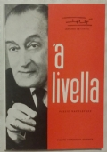
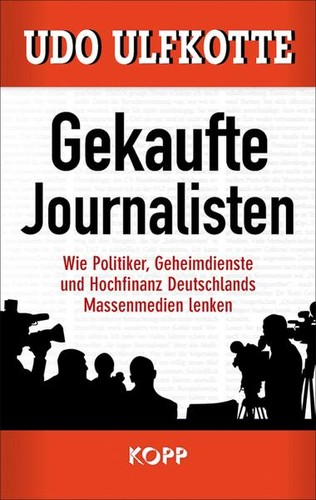

49:42 · 5 OPERE
Considerazioni sulla diretta di ieri: un esperimento riuscito?
Il filo del discorso
Dr Divago riprende una diretta sulla comunicazione e interpreta le reazioni del pubblico come un esempio delle difficoltà che aveva descritto. Il nucleo della conversazione è il rapporto fra identità, maschere sociali e disponibilità a riconoscere i propri limiti. Dal richiamo a Pirandello passa al prestigio dei titoli, alla memoria della morte e alla distanza fra strumenti tecnici e qualità della informazione. La seconda parte applica la sua critica a propaganda, appartenenze religiose e conflitti politici, con esempi molto controversi su pandemia, Islam e violenza. Il confronto fra il Bataclan e la morte del bambino Muhammad Tamimi introduce il problema di distinguere intenzione, responsabilità e dignità delle vittime. Packard, Ellul e un probabile libro di Ulfkotte chiudono il percorso sul potere dei media. La scheda conserva il filo argomentativo e separa i riscontri dalle conclusioni del relatore: una discussione fra spettatori non è un esperimento controllato; testimonianze, analogie e dati citati senza metodo non dimostrano da soli le accuse. Le note correggono il bilancio del Bataclan e contestualizzano la leggenda sulla biblioteca di Alessandria, lasciando dichiarati i riferimenti non localizzati.
I libri nel discorso

’A livella. Poesie napoletane
Copertina della raccolta, ristampa 1989: Copertina della ristampa Fausto Fiorentino, Napoli 1989, fotografata su un esemplare reale. Prima pubblicazione della raccolta 1964; il 1989 non è indicato come prima edizione. Il codice commerciale2560732539103 non è un ISBN e non viene registrato come tale.
Ristampa 1989, non prova della edizione usata nel video. La quarta è conservata solo per il controllo privato.
Totò, raccolta ’A livella e tema della morte espliciti; volume e poesia non duplicati.
Passaggio 15:40 ↗ · Fonti e libro ↗
Corano
Copertina: BUR Classici, edizione aggiornata
Edizione con introduzione, traduzione e commento di Alessandro Bausani, a cura di Layla Mustapha Ammar. Anno della ristampa non dedotto dalla copertina; nessuna edizione attribuita al video.
Corano nominato; il racconto violento non è riferito a un versetto identificato.
Passaggio 31:04 ↗ · Fonti e libro ↗
Gekaufte Journalisten. Wie Politiker, Geheimdienste und Hochfinanz Deutschlands Massenmedien lenken
Identificazione probabile
Copertina: Kopp Verlag 2014,336 pagine, ISBN 9783864451430. Copertina tedesca autentica verificata: titolo, autore e marchio editoriale coincidono. La precisa tiratura citata non è identificata.
Immagine autentica dell’opera, controllata visivamente; l’edizione di riferimento non è attribuita al filmato.
Ulfkotte e libro sulle pressioni ai giornalisti riconoscibili, ma titolo non pronunciato.
Passaggio 33:21 ↗ · Fonti e libro ↗
I persuasori occulti
Copertina: Einaudi · ET Saggi · 2015 · traduzione di Carlo Fruttero
Immagine autentica dell’opera, controllata visivamente; l’edizione di riferimento non è attribuita al filmato.
Vance Packard e I persuasori occulti espliciti.
Passaggio 46:23 ↗ · Fonti e libro ↗
Propagandes
Copertina: Economica · Classiques des sciences sociales · ISBN 9782717818482
Immagine autentica dell’opera, controllata visivamente; l’edizione di riferimento non è attribuita al filmato.
Jacques Ellul e Propagandes espliciti.
Passaggio 46:23 ↗ · Fonti e libro ↗